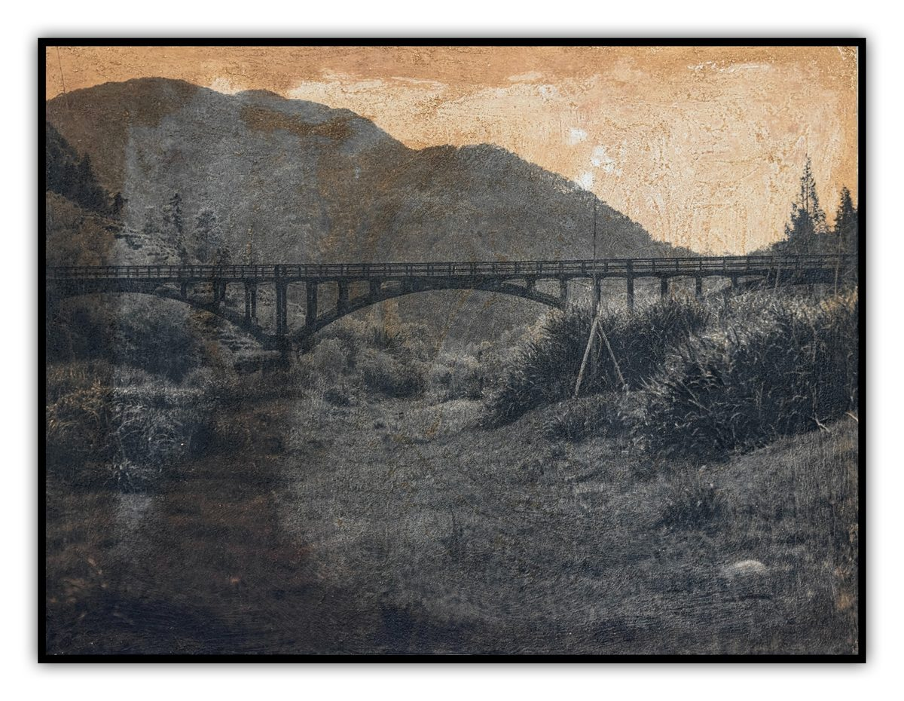
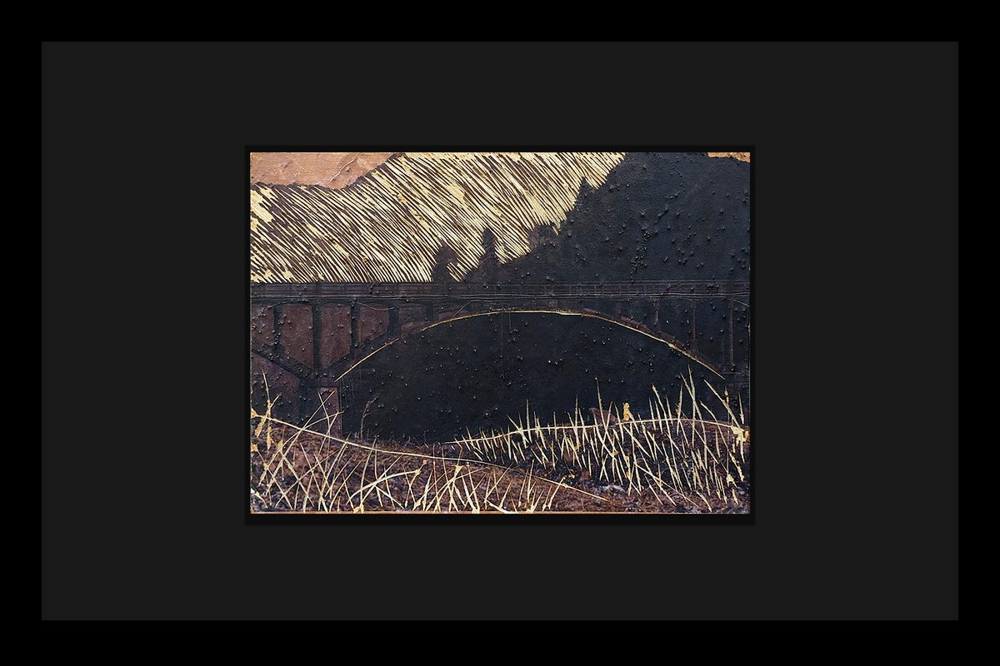

简介
这组作品以苕溪四岭水库为起点，记录了同一地点在三年间的呼吸与复苏。2022年，我拍下那座桥时，山 体裸露、草木稀疏，我用雕刻刀在画面上刻出地形的纹理与幻想中植被覆盖的样子，而2025年，再次回到 同样的位置，茂盛的草地早已填补了曾经的空白。生命在这里缓慢生长，也在我心中留下印痕。土地的呼吸 与河流的际遇在这三年中交织——由静入动、由荒至盛。我将取自苕溪河堤的五花土融进影像的肌肤之中， 让时间以物的形态沉淀，以此记录我的停留。



这组作品以苕溪四岭水库为起点，记录了同一地点在三年间的呼吸与复苏。2022年，我拍下那座桥时，山 体裸露、草木稀疏，我用雕刻刀在画面上刻出地形的纹理与幻想中植被覆盖的样子，而2025年，再次回到 同样的位置，茂盛的草地早已填补了曾经的空白。生命在这里缓慢生长，也在我心中留下印痕。土地的呼吸 与河流的际遇在这三年中交织——由静入动、由荒至盛。我将取自苕溪河堤的五花土融进影像的肌肤之中， 让时间以物的形态沉淀，以此记录我的停留。
